3.3. Stochastic Gradient Descent¶
Stochastic Gradient Descent (SGD) is a simple yet very efficient approach to discriminative learning of linear classifiers under convex loss functions such as (linear) Support Vector Machines and Logistic Regression. Even though SGD has been around in the machine learning community for a long time, it has received a considerable amount of attention just recently in the context of large-scale learning.
SGD has been successfully applied to large-scale and sparse machine learning problems often encountered in text classification and natural language processing. Given that the data is sparse, the classifiers in this module easily scale to problems with more than 10^5 training examples and more than 10^5 features.
The advantages of Stochastic Gradient Descent are:
- Efficiency.
- Ease of implementation (lots of opportunities for code tuning).
The disadvantages of Stochastic Gradient Descent include:
- SGD requires a number of hyperparameters such as the regularization parameter and the number of iterations.
- SGD is sensitive to feature scaling.
3.3.1. Classification¶
Warning
Make sure you permute (shuffle) your training data before fitting the model or use shuffle=True to shuffle after each iterations.
The class SGDClassifier implements a plain stochastic gradient descent learning routine which supports different loss functions and penalties for classification.
As other classifiers, SGD has to be fitted with two arrays: an array X of size [n_samples, n_features] holding the training samples, and an array Y of size [n_samples] holding the target values (class labels) for the training samples:
>>> from sklearn.linear_model import SGDClassifier
>>> X = [[0., 0.], [1., 1.]]
>>> y = [0, 1]
>>> clf = SGDClassifier(loss="hinge", penalty="l2")
>>> clf.fit(X, y)
SGDClassifier(alpha=0.0001, class_weight=None, epsilon=0.1, eta0=0.0,
fit_intercept=True, l1_ratio=0.15, learning_rate='optimal',
loss='hinge', n_iter=5, n_jobs=1, penalty='l2', power_t=0.5,
random_state=None, rho=None, shuffle=False, verbose=0,
warm_start=False)
After being fitted, the model can then be used to predict new values:
>>> clf.predict([[2., 2.]])
array([1])
SGD fits a linear model to the training data. The member coef_ holds the model parameters:
>>> clf.coef_
array([[ 9.91080278, 9.91080278]])
Member intercept_ holds the intercept (aka offset or bias):
>>> clf.intercept_
array([-9.990...])
Whether or not the model should use an intercept, i.e. a biased hyperplane, is controlled by the parameter fit_intercept.
To get the signed distance to the hyperplane use SGDClassifier.decision_function:
>>> clf.decision_function([[2., 2.]])
array([ 29.65318117])
The concrete loss function can be set via the loss parameter. SGDClassifier supports the following loss functions:
- loss="hinge": (soft-margin) linear Support Vector Machine,
- loss="modified_huber": smoothed hinge loss,
- loss="log": Logistic Regression,
- and all regression losses below.
The first two loss functions are lazy, they only update the model parameters if an example violates the margin constraint, which makes training very efficient and may result in sparser models, even when L2 penalty is used.
In the case of binary classification and loss="log" or loss="modified_huber" you get a probability estimate 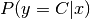 using SGDClassifier.predict_proba, where C is the largest class label:
>>> clf = SGDClassifier(loss="log").fit(X, y)
>>> clf.predict_proba([[1., 1.]])
array([[ 0.0000005, 0.9999995]])
The concrete penalty can be set via the penalty parameter. SGD supports the following penalties:
- penalty="l2": L2 norm penalty on coef_.
- penalty="l1": L1 norm penalty on coef_.
- penalty="elasticnet": Convex combination of L2 and L1; (1 - l1_ratio) * L2 + l1_ratio * L1.
The default setting is penalty="l2". The L1 penalty leads to sparse solutions, driving most coefficients to zero. The Elastic Net solves some deficiencies of the L1 penalty in the presence of highly correlated attributes. The parameter l1_ratio controls the convex combination of L1 and L2 penalty.
SGDClassifier supports multi-class classification by combining multiple binary classifiers in a “one versus all” (OVA) scheme. For each of the K classes, a binary classifier is learned that discriminates between that and all other K-1 classes. At testing time, we compute the confidence score (i.e. the signed distances to the hyperplane) for each classifier and choose the class with the highest confidence. The Figure below illustrates the OVA approach on the iris dataset. The dashed lines represent the three OVA classifiers; the background colors show the decision surface induced by the three classifiers.
In the case of multi-class classification coef_ is a two-dimensionaly array of shape=[n_classes, n_features] and intercept_ is a one dimensional array of shape=[n_classes]. The i-th row of coef_ holds the weight vector of the OVA classifier for the i-th class; classes are indexed in ascending order (see attribute classes_). Note that, in principle, since they allow to create a probability model, loss="log" and loss="modified_huber" are more suitable for one-vs-all classification.
SGDClassifier supports both weighted classes and weighted instances via the fit parameters class_weight and sample_weight. See the examples below and the doc string of SGDClassifier.fit for further information.
3.3.2. Regression¶
The class SGDRegressor implements a plain stochastic gradient descent learning routine which supports different loss functions and penalties to fit linear regression models. SGDRegressor is well suited for regression problems with a large number of training samples (> 10.000), for other problems we recommend Ridge, Lasso, or ElasticNet.

The concrete loss function can be set via the loss parameter. SGDRegressor supports the following loss functions:
- loss="squared_loss": Ordinary least squares,
- loss="huber": Huber loss for robust regression,
- loss="epsilon_insensitive": linear Support Vector Regression.
The Huber and epsilon-insensitive loss functions can be used for robust regression. The width of the insensitive region has to be specified via the parameter epsilon. This parameter depends on the scale of the target variables.
Examples:
- example_linear_model_plot_sgd_ols.py,
3.3.3. Stochastic Gradient Descent for sparse data¶
Note
The sparse implementation produces slightly different results than the dense implementation due to a shrunk learning rate for the intercept.
There is built-in support for sparse data given in any matrix in a format supported by scipy.sparse. For maximum efficiency, however, use the CSR matrix format as defined in scipy.sparse.csr_matrix.
3.3.4. Complexity¶
The major advantage of SGD is its efficiency, which is basically linear in the number of training examples. If X is a matrix of size (n, p) training has a cost of 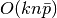, where k is the number of iterations (epochs) and 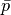 is the average number of non-zero attributes per sample.
Recent theoretical results, however, show that the runtime to get some desired optimization accuracy does not increase as the training set size increases.
3.3.5. Tips on Practical Use¶
Stochastic Gradient Descent is sensitive to feature scaling, so it is highly recommended to scale your data. For example, scale each attribute on the input vector X to [0,1] or [-1,+1], or standardize it to have mean 0 and variance 1. Note that the same scaling must be applied to the test vector to obtain meaningful results. This can be easily done using StandardScaler:
from sklearn.preprocessing import StandardScaler scaler = StandardScaler() scaler.fit(X_train) # Don't cheat - fit only on training data X_train = scaler.transform(X_train) X_test = scaler.transform(X_test) # apply same transformation to test dataIf your attributes have an intrinsic scale (e.g. word frequencies or indicator features) scaling is not needed.
Finding a reasonable regularization term
is best done using GridSearchCV, usually in the range 10.0**-np.arange(1,7).
Empirically, we found that SGD converges after observing approx. 10^6 training samples. Thus, a reasonable first guess for the number of iterations is n_iter = np.ceil(10**6 / n), where n is the size of the training set.
If you apply SGD to features extracted using PCA we found that it is often wise to scale the feature values by some constant c such that the average L2 norm of the training data equals one.
References:
- “Efficient BackProp” Y. LeCun, L. Bottou, G. Orr, K. Müller - In Neural Networks: Tricks of the Trade 1998.
3.3.6. Mathematical formulation¶
Given a set of training examples 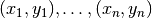 where
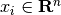 and 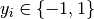, our goal is to
learn a linear scoring function 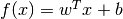 with model parameters
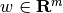 and intercept 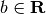. In order
to make predictions, we simply look at the sign of  .
A common choice to find the model parameters is by minimizing the regularized
training error given by
.
A common choice to find the model parameters is by minimizing the regularized
training error given by

where  is a loss function that measures model (mis)fit and
is a loss function that measures model (mis)fit and
 is a regularization term (aka penalty) that penalizes model
complexity; 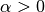 is a non-negative hyperparameter.
is a regularization term (aka penalty) that penalizes model
complexity; 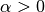 is a non-negative hyperparameter.
Different choices for entail different classifiers such as
- Hinge: (soft-margin) Support Vector Machines.
- Log: Logistic Regression.
- Least-Squares: Ridge Regression.
- Epsilon-Insensitive: (soft-margin) Support Vector Regression.
All of the above loss functions can be regarded as an upper bound on the misclassification error (Zero-one loss) as shown in the Figure below.
Popular choices for the regularization term include:
- L2 norm: 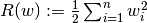,
- L1 norm: 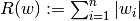, which leads to sparse solutions.
- Elastic Net: 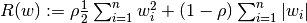, a convex combination of L2 and L1, where 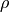 is given by 1 - l1_ratio.
The Figure below shows the contours of the different regularization terms in the parameter space when 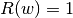.
3.3.6.1. SGD¶
Stochastic gradient descent is an optimization method for unconstrained optimization problems. In contrast to (batch) gradient descent, SGD approximates the true gradient of 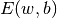 by considering a single training example at a time.
The class SGDClassifier implements a first-order SGD learning routine. The algorithm iterates over the training examples and for each example updates the model parameters according to the update rule given by
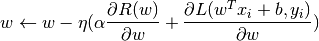
where 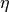 is the learning rate which controls the step-size in
the parameter space. The intercept  is updated similarly but
without regularization.
is updated similarly but
without regularization.
The learning rate can be either constant or gradually decaying. For classification, the default learning rate schedule (learning_rate='optimal') is given by
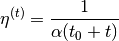
where  is the time step (there are a total of n_samples * n_iter
time steps), 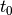 is determined based on a heuristic proposed by Léon Bottou
such that the expected initial updates are comparable with the expected
size of the weights (this assuming that the norm of the training samples is
approx. 1). The exact definition can be found in _init_t in BaseSGD.
is the time step (there are a total of n_samples * n_iter
time steps), 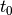 is determined based on a heuristic proposed by Léon Bottou
such that the expected initial updates are comparable with the expected
size of the weights (this assuming that the norm of the training samples is
approx. 1). The exact definition can be found in _init_t in BaseSGD.
For regression the default learning rate schedule is inverse scaling (learning_rate='invscaling'), given by

where 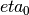 and 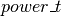 are hyperparameters chosen by the user via eta0 and power_t, resp.
For a constant learning rate use learning_rate='constant' and use eta0 to specify the learning rate.
The model parameters can be accessed through the members coef_ and intercept_:
- Member coef_ holds the weights
- Member intercept_ holds

{kind=link}
{kind=link}
References:
- “Solving large scale linear prediction problems using stochastic gradient descent algorithms” T. Zhang - In Proceedings of ICML ‘04.
- “Regularization and variable selection via the elastic net” H. Zou, T. Hastie - Journal of the Royal Statistical Society Series B, 67 (2), 301-320.
3.3.7. Implementation details¶
The implementation of SGD is influenced by the Stochastic Gradient SVM of Léon Bottou. Similar to SvmSGD, the weight vector is represented as the product of a scalar and a vector which allows an efficient weight update in the case of L2 regularization. In the case of sparse feature vectors, the intercept is updated with a smaller learning rate (multiplied by 0.01) to account for the fact that it is updated more frequently. Training examples are picked up sequentially and the learning rate is lowered after each observed example. We adopted the learning rate schedule from Shalev-Shwartz et al. 2007. For multi-class classification, a “one versus all” approach is used. We use the truncated gradient algorithm proposed by Tsuruoka et al. 2009 for L1 regularization (and the Elastic Net). The code is written in Cython.
References:
- “Stochastic Gradient Descent” L. Bottou - Website, 2010.
- “The Tradeoffs of Large Scale Machine Learning” L. Bottou - Website, 2011.
- “Pegasos: Primal estimated sub-gradient solver for svm” S. Shalev-Shwartz, Y. Singer, N. Srebro - In Proceedings of ICML ‘07.
- “Stochastic gradient descent training for l1-regularized log-linear models with cumulative penalty” Y. Tsuruoka, J. Tsujii, S. Ananiadou - In Proceedings of the AFNLP/ACL ‘09.